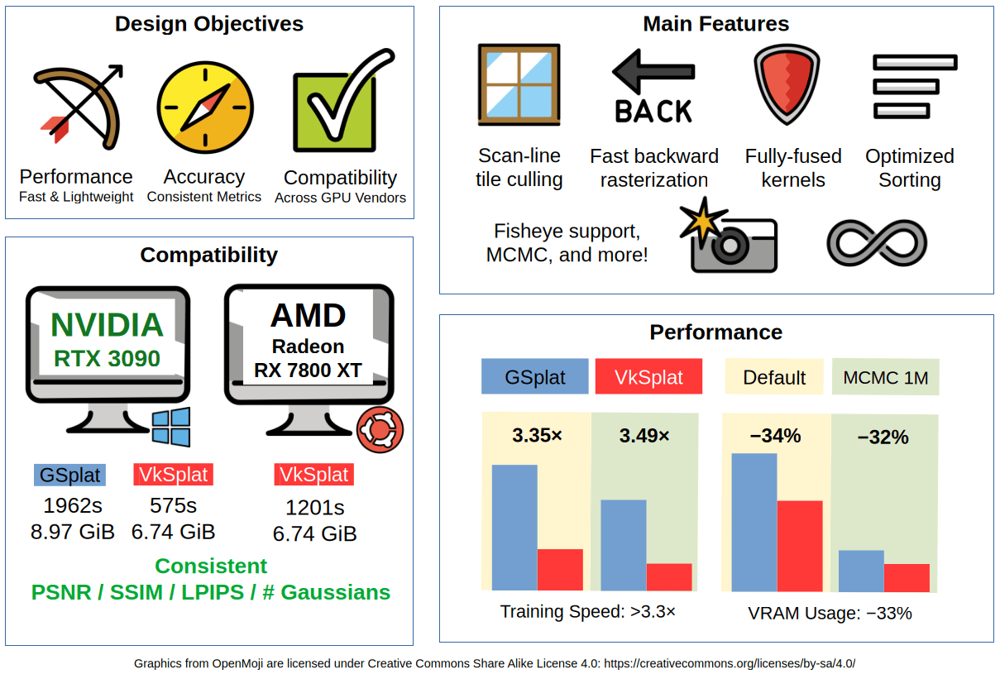
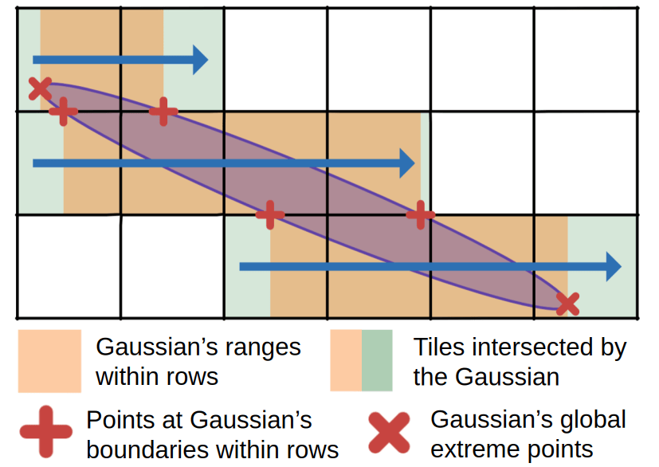
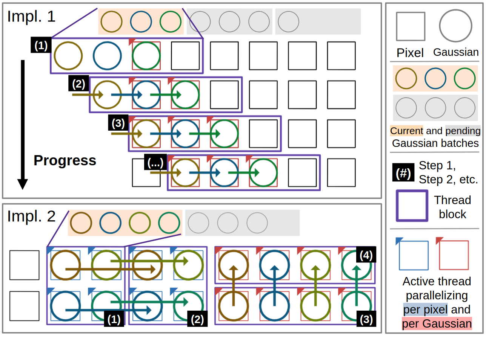
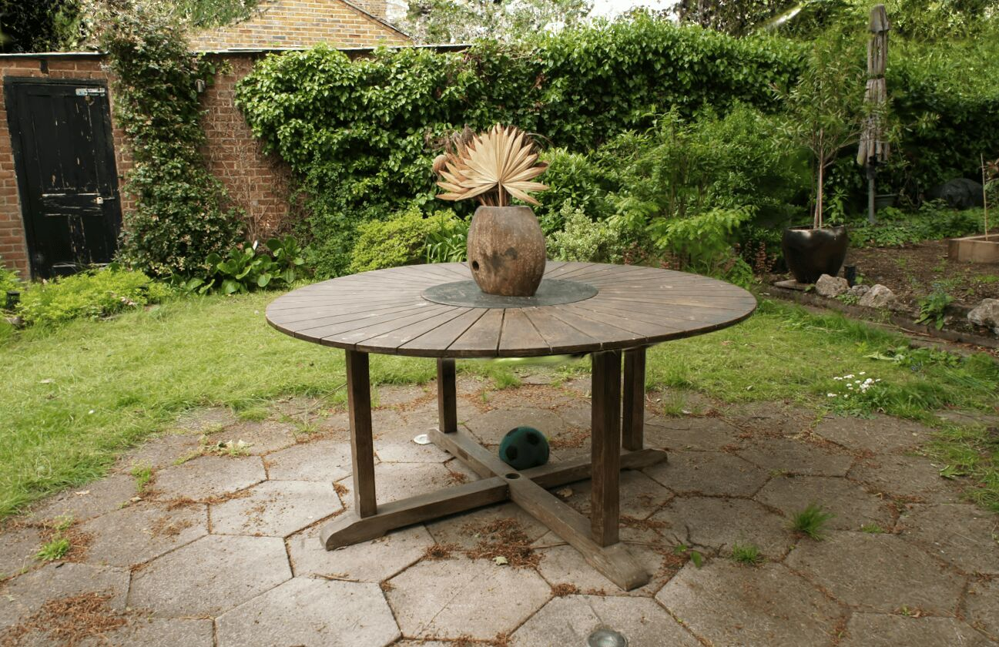
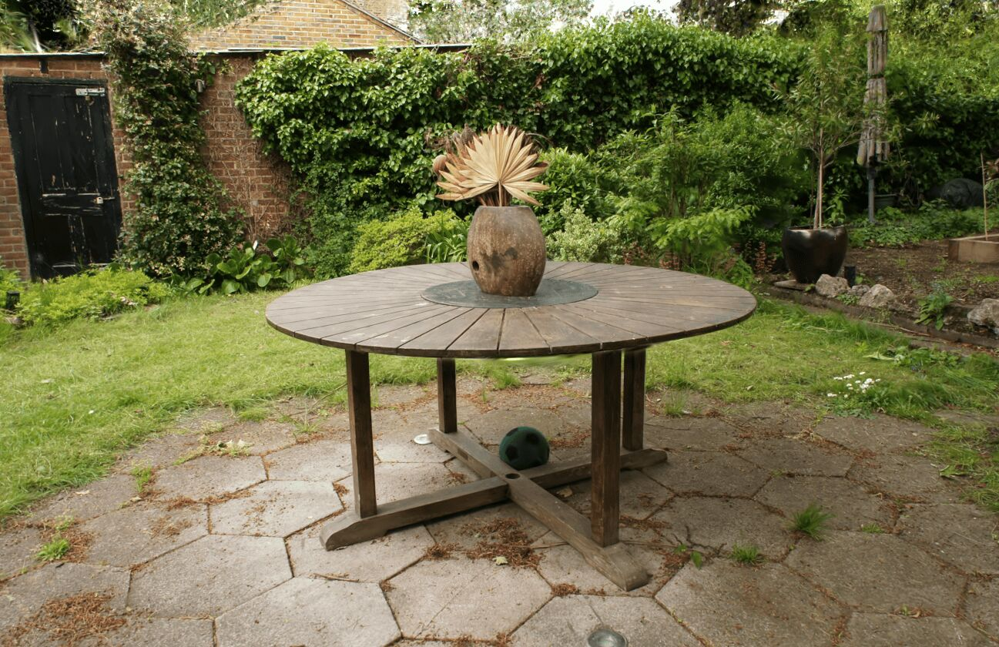
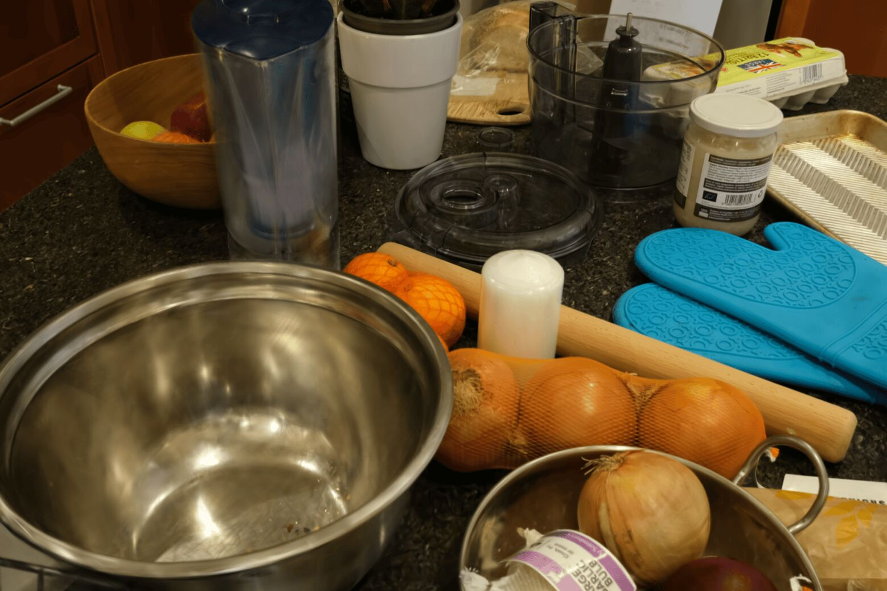
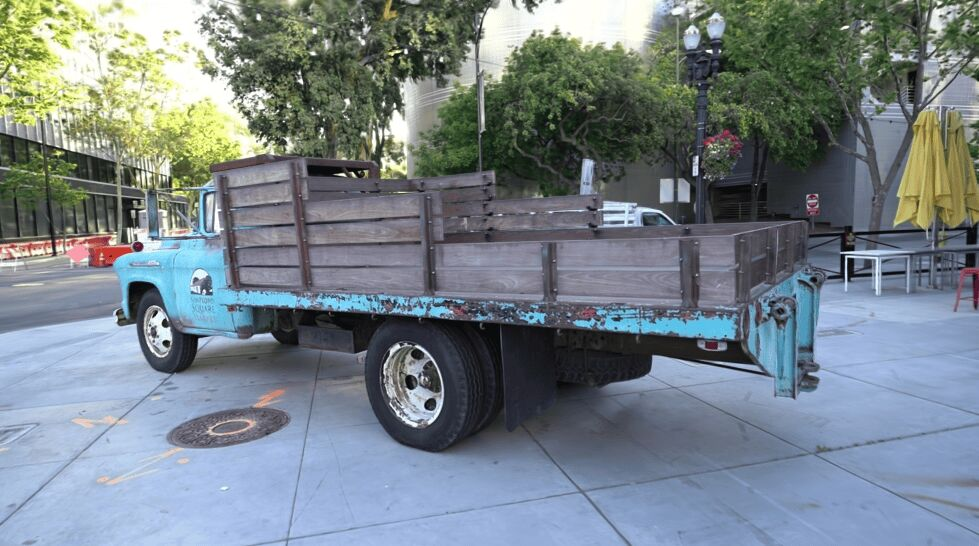
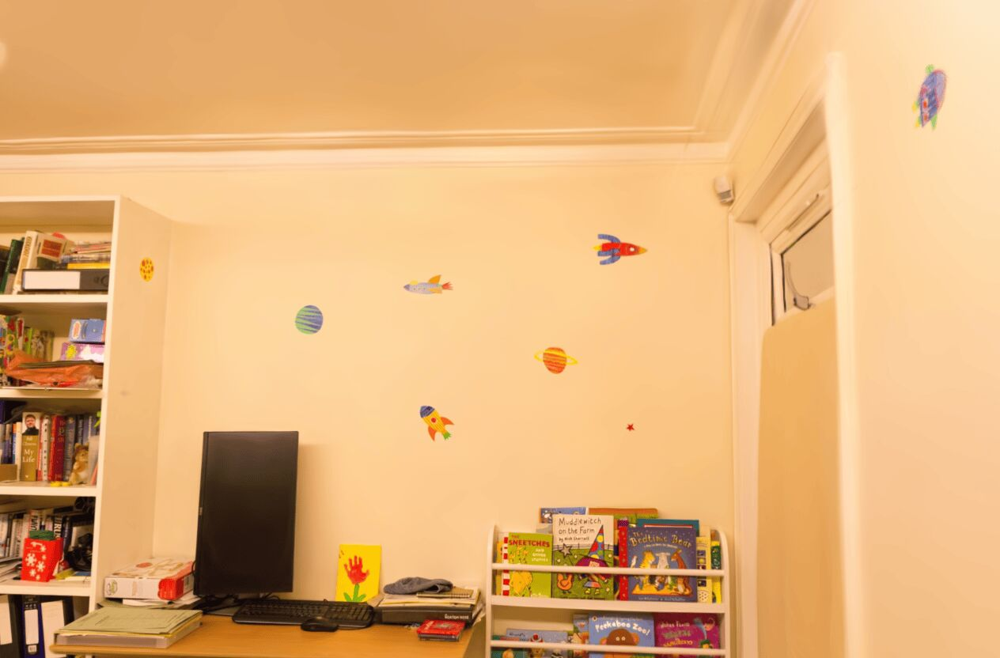
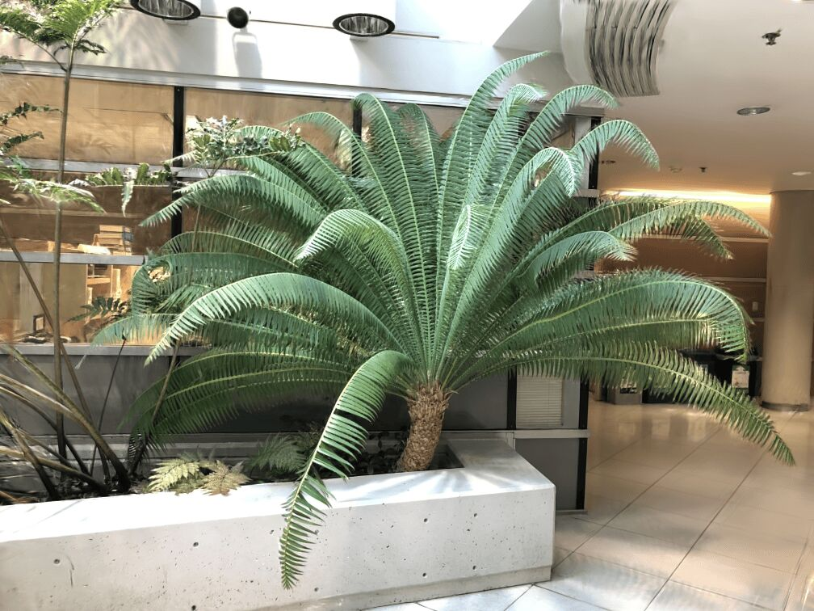
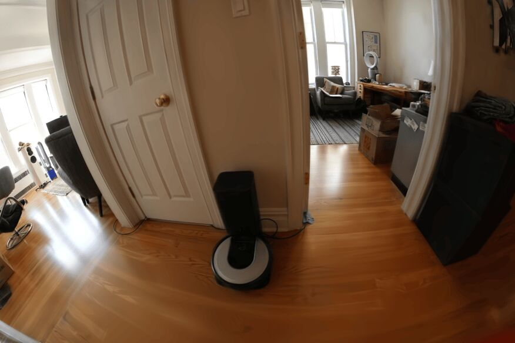

A fully cross-vendor 3D Gaussian Splatting training pipeline delivering >3.3x speed and 33% VRAM reduction over CUDA+PyTorch baselines.
Huawei Canada
VkSplat is built on Slang-Gaussian-Rasterization and targets the Vulkan backend, leveraging Slang's multi-backend flexibility. Various optimizations push performance well beyond the CUDA baseline.
A scan-line intersection approach computes exact Gaussian–tile overlaps with closed-form interval arithmetic, eliminating both false-positive intersections that slow down sorting and rasterization in prior work, without introducing false-negative intersections that impact quality.
Two rasterization backward kernels (per-Gaussian parallelization and a shared-memory forward+backward formulation) are selected at runtime via Thompson sampling, choosing whichever is faster for the current scene configuration.
Projection backward and Adam optimizer are merged into a single kernel pass. Log/logit transforms and SH coefficient layout optimizations completely eliminate the excess VRAM footprint present in existing PyTorch-based implementations.
A depth-remapping function compresses tile-depth keys to 32 bits (14 bits tile ID + 18 bits depth), avoiding the slow Vulkan equivalent of CUDA's 64-bit radix sort while preserving quality at up to 1080p resolution.
A fused kernel computes the gradient of the weighted L₁ + SSIM loss directly, skipping all intermediate reductions and memory-layout conversions. Reference images are stored as 4×UINT8 RGBA, removing the FP32 conversion overhead.
Degree-3 spherical harmonics (48 FP32 coefficients per Gaussian) are split into 12 × 128-bit values in a column-aligned format matching subgroup size, improving memory coalescing across the projection stages.


Existing implementations often produce false-positive intersections in tile-Gaussian association, which negatively impacts performance. In our implementation, we compute exact intersections using a scan-line approach, with efficient intersection counting and traversal in fused kernels.

Backward rasterization is often a performance bottleneck of 3DGS training. We use two implementations with careful consideration to minimize atomic contention and minimizing divergence, and a Thompson sampling scheduler to automatically pick the fastest implementation per dataset and hardware.
We evaluate on 7 scenes from the Mip-NeRF 360 dataset. Each configuration is trained 5 times; results are reported with 90% confidence intervals. VkSplat matches baseline quality while achieving substantial resource savings.
| Method | PSNR ↑ | SSIM ↑ | LPIPS ↓ | # Gaussians |
|---|---|---|---|---|
| GSplat (Default) | 29.[19–25] | 0.87[8–9] | 0.124 | 3.0[6–8] M |
| VkSplat (Default) Ours | 29.2[0–7] | 0.87[8–9] | 0.12[4–5] | 3.0[2–6] M |
| GSplat (MCMC) | 29.4[3–5] | 0.881 | 0.1[29–30] | 1.00 M |
| VkSplat (MCMC) Ours | 29.[39–45] | 0.881 | 0.130 | 1.00 M |
| Method | Total Time | Speedup | VRAM (GiB) |
|---|---|---|---|
| GSplat (Default) | 1384 s | — | 4.56 |
| VkSplat (Default) Ours | 412 s | 3.35× | 3.01 |
| GSplat (MCMC) | 995 s | — | 1.37 |
| VkSplat (MCMC) Ours | 285 s | 3.49× | 0.93 |
All timing on NVIDIA RTX 3090, averaged over 7 Mip-NeRF 360 scenes. VkSplat is faster in every single pipeline stage.
Default densification. Average over 7 scenes, NVIDIA RTX 3090.
VkSplat outperforms GSplat in every pipeline stage. The large "unaccounted" time in GSplat is mainly SH tensor concatenation backward and small kernel launches managed by PyTorch.
VkSplat produces rendering quality consistent with the CUDA baseline across Mip-NeRF 360 dataset. It also generalizes to other commonly used benchmark datasets with pinhole and fisheye cameras. First eval image is shown for each dataset.







A key advantage of building on Vulkan is freedom from the NVIDIA/CUDA ecosystem. VkSplat has been validated on NVIDIA, AMD, and Intel® hardware, producing consistent quality metrics and VRAM usage on both vendors. All Gaussian counts and quality scores are identical between platforms.
The largest performance gap between the two vendors is image-to-device transfer, which is roughly 30× slower on AMD due to a PCIe throughput difference. Asynchronous data transfer would largely close this gap. Compute-bound stages like rasterization backward are within 2× of each other. We expect hardware-specific tuning could further reduce the gap.
While VkSplat demonstrates strong performance advantages, the current implementation has several limitations compared to production-grade 3DGS trainers:
Future extensions include support for additional Slang backends (Metal, DirectX, WebGPU) and application of VkSplat's optimizations to other Gaussian splatting variants.
@inproceedings{chen2026vksplat, booktitle = {Eurographics 2026 - Short Papers}, title = {{VkSplat: High-Performance 3DGS Training in Vulkan Compute}}, author = {Chen, Jingxiang and Ibrahim, Mohamed and Liu, Yang}, year = {2026}, publisher = {The Eurographics Association}, ISSN = {2309-5059}, ISBN = {978-3-03868-299-8}, DOI = {10.2312/egs.20261024} }
We thank the authors of GSplat and Slang-Gaussian-Rasterization for open-sourcing their codebases under permissive Apache-2.0 license, which served as the foundation for our work. We also thank the original 3DGS authors for releasing their implementation, as well as the Mip-NeRF 360 dataset.
This work was conducted at Huawei Canada. The website template is inspired by the NeRF/3DGS project page conventions from the community.